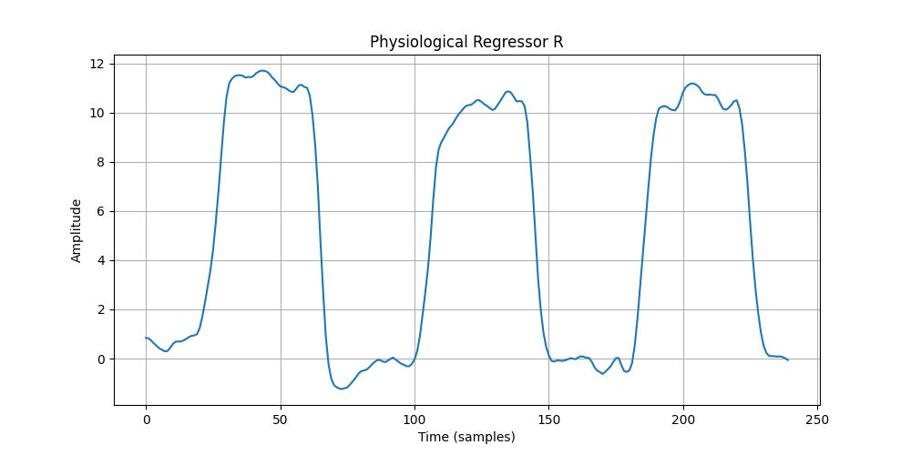

Make_CVR_reg_physio brick¶
Generate the physiological regressor for cerebrovascular reactivity evaluation¶
The regressor generated is end-tidal carbon dioxide (ETCO2) as a function of the dynamics (repetition of scans). It can be used as part of a general linear model (GLM) or similar analysis, to assess the relationship between variations in ETCO2 and cerebral blood flow in regions of interest.
ETCO2 data are pre-processed and then convolved with a canonical hemodynamic response function (HRF) to create a regressor that accounts for the hemodynamic response to variations in CO2 levels.
The brick accepts physiological parameter files in .csv (Magdata) or .log (CoolTerm) format and trigger files in .txt, .log or .csv format.
The Make_CVR_reg_physio brick generates a standard (average) regressor if the physiological parameter and trigger files are not supplied or are corrupt. Otherwise, an individual regressor is generated.
Standard regressor:
{kind=link}
Inputs parameters:
- func_file
T2* functional Magnetic Resonance Imaging (fMRI) experiment recorded during the hypercapnic Challenge (only required to extract metadata from the functional image). An existing, uncompressed file (valid extensions: [.img, .nii, .hdr]).
ex. ['/home/username/data/raw_data/func.nii']
- trigger_data
The trigger data, to ensure that ETCO2 data are synchronized with imaging data. An existing file, exclusively in [.txt, .csv, .log] format.
ex. '/home/username/data/downloaded_data/vaso_trigger_time.log'
- physio_data
The physiological data, including ETCO2 levels, measured during the neuroimaging scan. An existing file, exclusively in [.txt, .csv] format.
ex. '/home/username/data/downloaded_data/physio_data.csv'
Outputs parameters:
- cvr_reg
The output generated regressor. A file with .mat format.
ex. '/home/username/data/derived_data/CVR_physio_reg.mat'